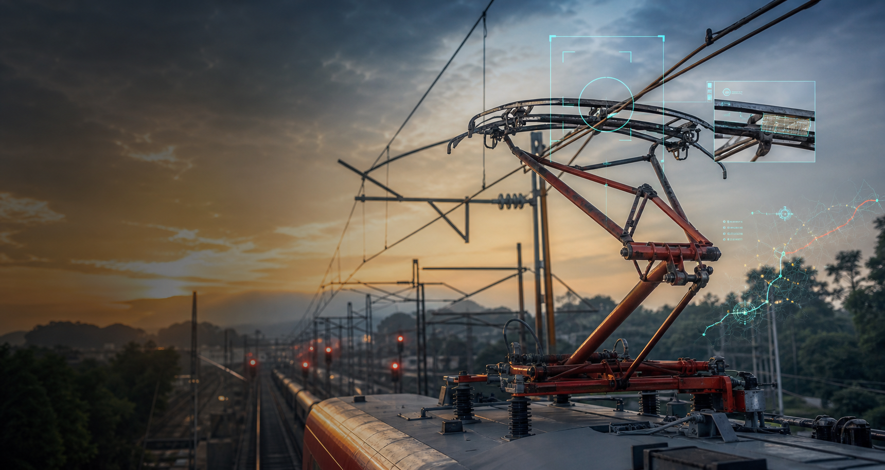

Pantograph Vision Monitor
A detection workflow around railway pantograph monitoring, depth context, video writing, and runtime launchers for field setups.

Computer Vision · Railways · Field Tools
A public project hub for engineering tools that combine pantograph monitoring, GPS route context, depth sensing, model conversion, and deployment scripts.
Featured Work
These are the pieces visitors can open from the profile page and use as entry points into the codebase.
A detection workflow around railway pantograph monitoring, depth context, video writing, and runtime launchers for field setups.
Route spreadsheets, converted files, and browser maps for aligning video inspection work with physical railway location data.
Hardware-facing capture and implantation code for pairing RGB inspection streams with depth data during railway monitoring.
Utility scripts for model compilation, TensorRT conversion, camera index checks, and distance testing around inspection pipelines.
Engineering Stack
The repo keeps the heavy model binaries out of GitHub, while preserving the source, reports, maps, and utility scripts visitors need to understand the work.
From The Profile
Add this Pages URL to the GitHub profile README so visitors can jump from the profile into the live project gallery.